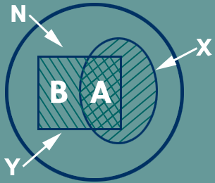

In our retrieval problem, a fixed set of documents is the base for an indexing program, Information Agent [13], that acts like a personal assistant, selecting information that it thinks you will find useful and extracting the pointers or keywords from a fixed sample of documents.
This set of documents is a list of journal articles prepared weekly, each containing the titles and author details of over 400 new entries. This list is obtained electronically from BT's library circulars at Adastral Park through a WWW server.

Fig 5. Document sets - Total number, N; relevant, X; retrieved, Y; relevant and retrieved, A; non-relevant that have been retrieved, B
Once the set of documents has been set and the keywords extracted, the retrieval system requires an indexing function that transforms the two previous domains into a set of real numbers. Thus, given a document Di and a keyword kj the indexing fij is such that,
where i:1 ...N and j:1 ...M. N and M are the total number of documents and keywords respectively. In our case we have simplified this situation by assuming that fij can only return 0 or 1; the criterion is simply that the keyword has to appear in the document title.
In the genetic programming approach, each creature is a tree which root or TopLevel is a Boolean function from the set S={OR,AND,NOT,NAND,NOR}; the arity or number of branches each function can have is variable, except the function NOT which has just one. This allows us to control the breadth of the tree; the depth is chosen by assigning a maximum number of levels beforehand.
Each training case is a vector in the keyword domain,
where K is the total number of cases. That is, a vector of M components (as many as different keywords) that are either 1 (if the document contains that term) or 0 (if not). At each Boolean function, their arguments are first evaluated (0s or 1s) and then the function itself also returns 0 or 1. The combined response for the whole set of training cases for each tree, Ft , is called fitness function. The one used in this paper takes into account the degrees of precision and recall at retrieving documents. Following, we can write:
for every t: 1 ...T, being T the total number of trees. The parameters a and b multiply the recall and precision rates respectively and are normalised so that,
They have been introduced to emphasise either recall or precision.
The fitness function maximum value is 1 (corresponding to all relevant documents being retrieved while no non-relevant ones have) while its minimum is 0. In order to adapt to the fitness scale in BTGP we make the transformation:
and, once the fitness has been evaluated for each training case,
is the average fitness per tree. This value is used in the selection mechanisms at every generation.
© Copyright British Telecommunications plc 1999